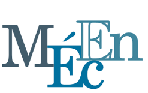

Mon Parcours : Économie & Data Science
👋 Qui suis-je ?
Salut ! Je m’appelle Emmanuel Paguiel BOUENDO. Étudiant en Master Économiste d’Entreprise (MÉcEn), je me forme pour devenir le pont entre la data et la stratégie d’entreprise. Ma double compétence en économie et en Machine Learning me permet de donner du sens stratégique aux données et de les transformer en recommandations concrètes pour les décisions.
🎓 Formation
 Master en Data Science / Économie
Université de Tours — 📍 Tours, France (2024–2025)
🔗 En savoir plus
Licence en Économie de l’entreprise
Université de Tours — 📍 Tours, France (2023–2024)
🔗 En savoir plus
Master Économie et Organisation de l’entreprise
Université Marien Ngouabi — 📍 Brazzaville, Congo (2019–2021)
🔗 En savoir plus
Licence en Économie de l’entreprise
Université Marien Ngouabi — 📍 Brazzaville, Congo (2015–2018)
Licence professionnelle en Banque, Assurances et Finances
Chambre de Commerce de Brazzaville — 📍 Tours, France (2015–2016)
🎖️ Certifications
- Google Data Analytics (Coursera)
- Machine Learning (Stanford / Coursera)
💼 Expérience Professionnelle
Conseiller Clientèle (Consultant)
Société Générale Congo (2019–2022)
→ Gestion et développement d’un portefeuille clients stratégique, contribuant activement à l’atteinte des objectifs de vente lors de campagnes nationales (voir section Succès Clés (Better Together, Objectif Réussi)
→ Application de techniques de fidélisation pour améliorer la rétention et maximiser la valeur client.
→ Utilisation d’outils CRM pour analyser les données clients et identifier des opportunités de vente croisée.
→ Maîtrise de la communication, de la négociation et de la présentation d’informations complexes à divers interlocuteurs.
→ Collaboration étroite avec les équipes internes pour assurer une expérience client fluide et cohérente.
Gestionnaire de Production IARD (Stage)
Net Conseils, Brazzaville (2018–2019)
→ Responsable de la saisie et de la gestion administrative des polices d’assurance (contrats, sinistres), garantissant l’intégrité de l’information.
→ Suivi des dossiers clients, assurant une communication efficace et une résolution rapide des demandes.
→ Participation active aux campagnes de prospection commerciale, contribuant à l’expansion du portefeuille clients.
Agent de recouvrement (Stage)
Chambre de Commerce de Brazzaville (Mars–Mai 2018)
→ Coordination des opérations de recensement, de relance et de collecte des cotisations.
Middle Office Risques (Stage)
La Congolaise de Banque (2016–2017)
→ Participation à l’analyse des dossiers de crédit et à l’élaboration de reporting réguliers sur les risques.
→ Suivi des indicateurs de performance des portefeuilles de crédit.
→ Collaboration avec les équipes front office pour assurer la conformité aux politiques de gestion des risques.
→ Utilisation d’outils analytiques pour identifier les tendances et recommander des actions correctives.
Middle Office Clients (Stage)
Fédération des MUCODEC (2016)
→ Assistance aux opérations de guichet et accueil client, développant la capacité d’adaptation et la gestion des priorités.
→ Suivi organisé des dossiers de crédits et des opérations courantes, garantissant la qualité du service client.
→ Participation aux activités de promotion des services financiers, contribuant à l’augmentation de la clientèle.
🏆 Réalisations Marquantes
🎖️ Diplôme de succès – Société Générale Congo
📄 Voir le certificat🥇 +15% des ouvertures de compte – Better Together
📄 Voir le certificat🚀 250 ouvertures de compte / trimestre – Objectif Réussi
📄 Voir le certificat
💡 Ma Philosophie
“Les données racontent des histoires. Mon rôle est de les écouter, les comprendre et les traduire en actions concrètes qui créent de la valeur.”
Je crois en une data science : - Humaine et centrée utilisateur - Éthique et responsable - Accessibles à tous - Orientée résultats concrets
🎯 Objectifs
- Concevoir des outils IA innovants pour les PME
- Partager mes connaissances via conférences et articles
- Former de futurs talents en data science
- Contribuer à l’open source à impact social